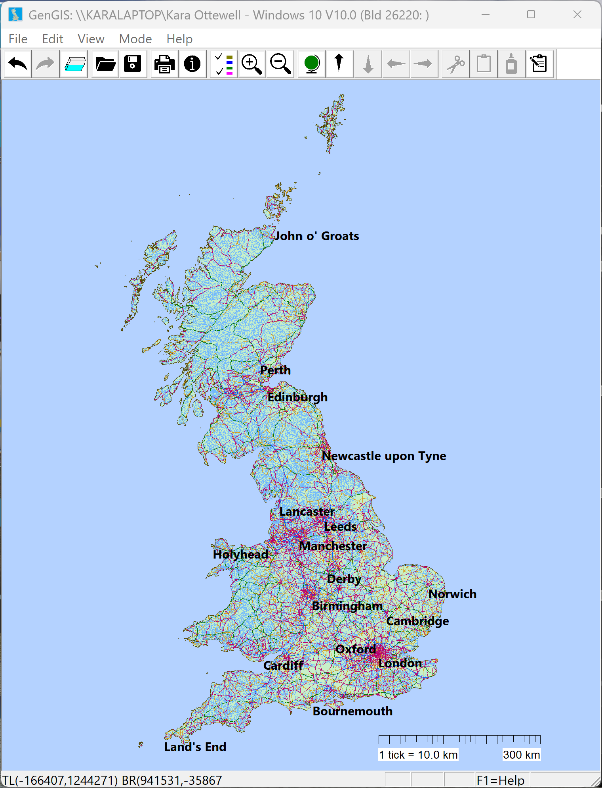
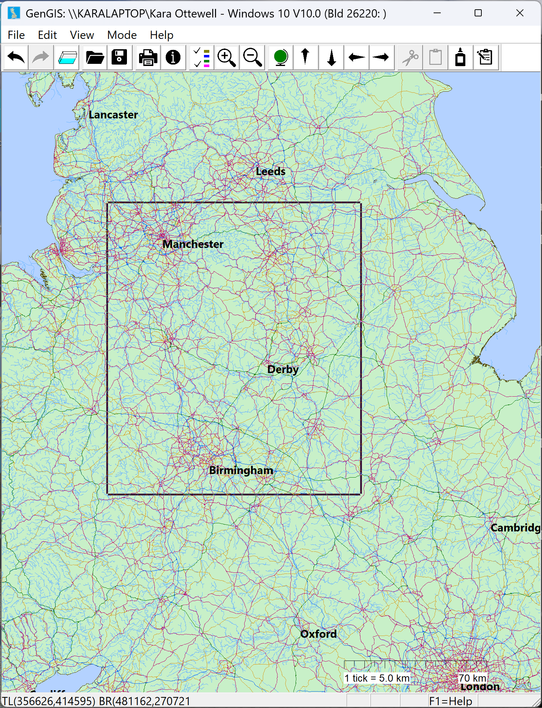
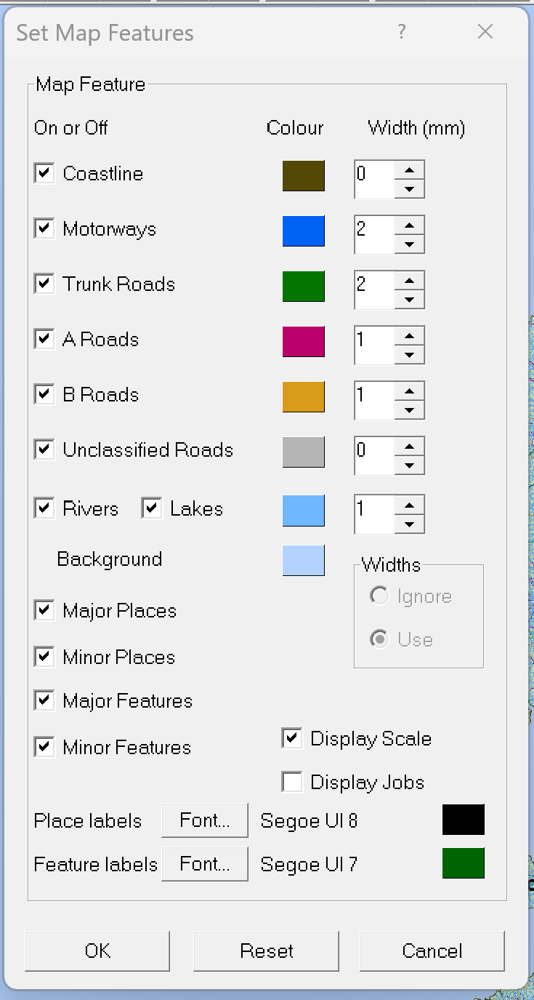
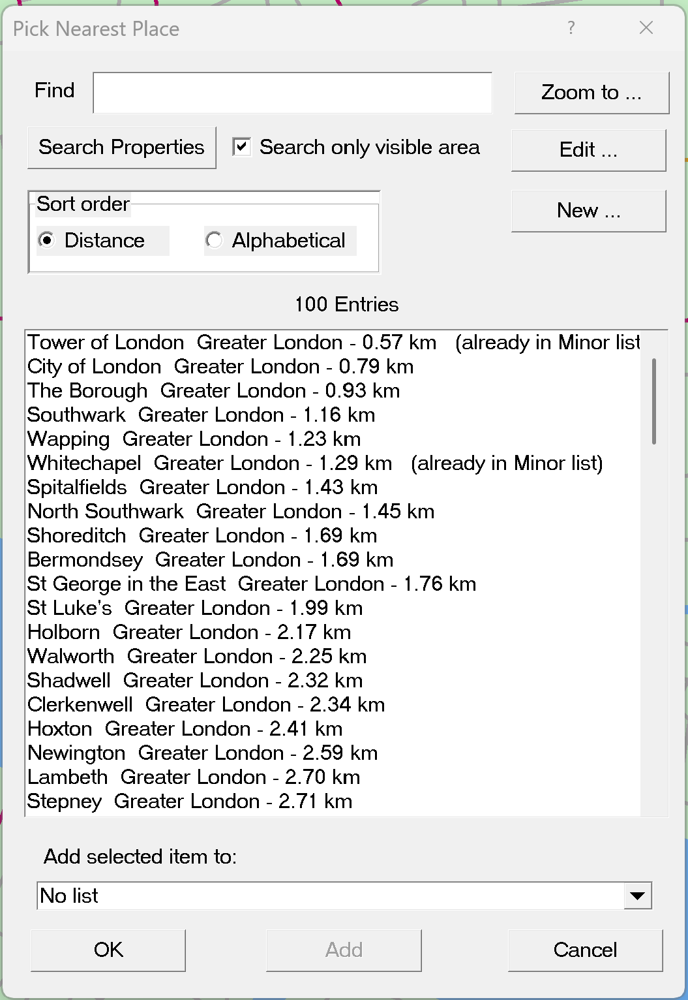
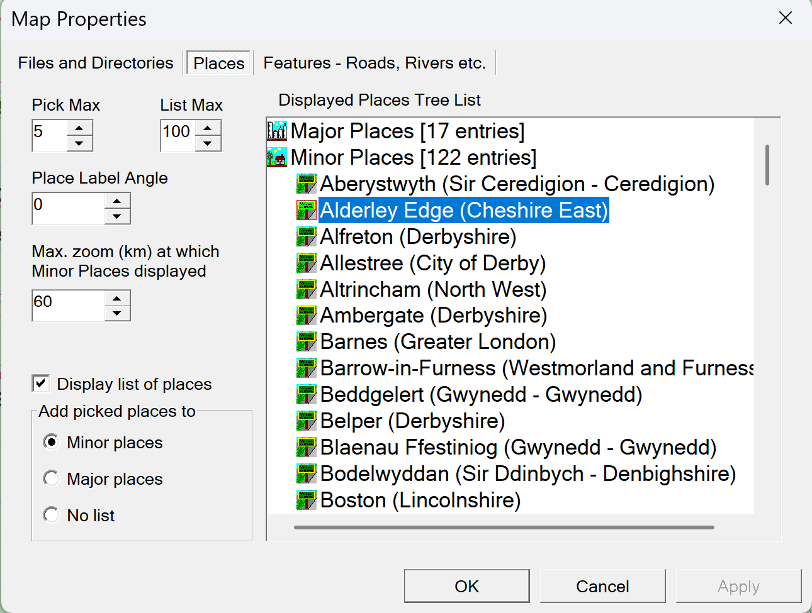
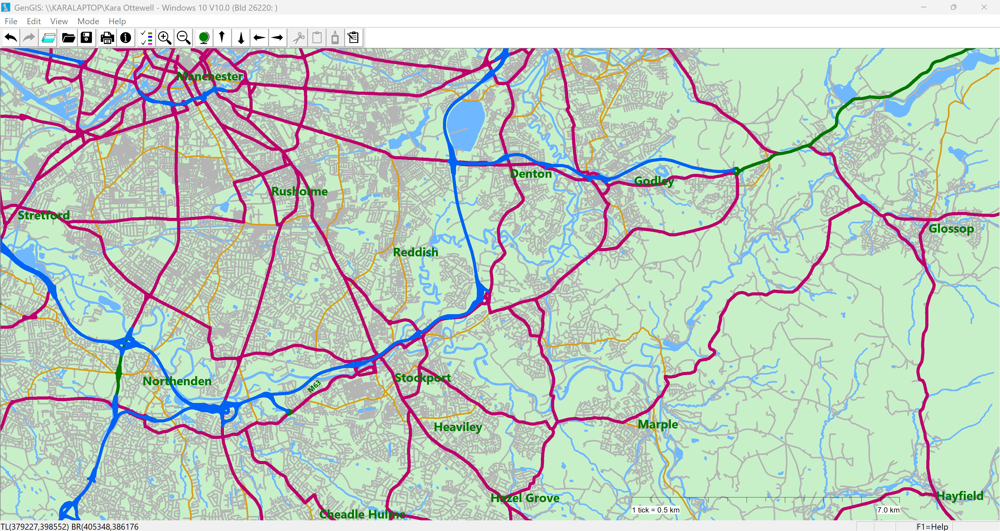

Especially for the old YRL gang, here is a "blast from the past" map viewer for Great Britain built on Ordnance Survey open data — pan and zoom around the coastline, motorways, A, B and minor roads, rivers, lakes, towns and counties; choose exactly which layers, colours, widths and labels are drawn; pick out the places and features you care about; and print or save the result.
Windows Desktop MFC app Ordnance Survey data Free
So for a fun project and an excuse to use Claude AI to figure out how to transform the free UK Ordnance Survey data into a form I could use with the 1998 YRL "GenGIS" map viewer, I built a new version of GenGIS that runs on modern Windows and uses the current OS open data products. It is still the MFC app, tweaked to run on Windows 10 onwards. The mapping software may be from 1998 but the map data is bang up to date as per the latest OS open data releases. The installation instructions are below and comprise basically just unpacking a .zip file. Have fun!
GenGIS draws a map of Great Britain from Ordnance Survey open data. The coastline, the road network (motorways, trunk roads, A roads, B roads and minor/unclassified roads), rivers, lakes, towns and county boundaries are each held as their own layer, and you decide which of them appear, in what colour, at what line width, and with which labels. You move around the map by dragging out a zoom box or using touch and mouse gestures, and you can pick individual places and features off the map to keep them permanently labelled.
The underlying geography comes from modern OS open products — OS Open Roads, OS Open Zoomstack, OS Open Rivers and OS Open Names — so the network, water and place names are up to date, while the map stays fast even with the whole country in view. The sections below walk through the main features; most other controls explain themselves through their tooltips.
The most up to date version of this information will always be the online version.

To zoom in, click and drag a rectangle across the area you want to magnify; releasing the mouse button zooms to that region. Each zoom is added to a zoom history, so you can step back and forward through the places you have visited, much like the history in a web browser, and a whole-map button returns you to the full view of Britain at any time. Arrow buttons pan the view north, south, east and west.
On a touchscreen you can drag with two fingers to pan and pinch or spread to zoom out or in, centred between your fingers. A two-finger drag on a precision touchpad pans as well, and the mouse wheel zooms. As you move around, the status bar shows the National Grid coordinates of the view so you always know where you are.
While you are dragging or pinching, GenGIS switches to a quick-draw mode — it draws just the coastline and the major roads as thin lines so the map keeps up with your fingers, then fills in the full detail (minor roads, rivers, lakes and all the labels) the moment you let go. Major town names stay on screen even during the drag, so you can always see where you are heading.

The Set Map Features dialog is where you tailor the map. Each layer — coastline, motorways, trunk roads, A roads, B roads, minor roads, rivers, lakes and places — can be turned on or off independently, given its own colour, and (when zoomed in close enough) drawn with a chosen line width so major routes stand out from minor ones. A scale bar can be shown on the map, and the whole dialog is modeless, so the map stays fully interactive while you experiment — changes appear straight away.
Labels are configurable too: place labels and feature labels each have their own font and colour (place names default to black, feature names to dark green), so the map reads clearly whichever layers you have chosen. To keep wide views fast, heavy line widths are only used once you are zoomed in past a sensible limit; further out, everything is drawn with thin lines.
GenGIS distinguishes major and minor places and features. Major items (large towns and cities, the main roads and rivers) are shown even when a lot of the country is in view, while minor items only appear once you have zoomed in past a cut-off you can set — so the map never becomes an unreadable tangle of labels at low magnification. Anything you pick in place picking or feature picking mode is temporarily shown on the map to let you decide whether to keep it or not. If you add it to either your Minor or Major displayed list, it will stay on the map if Minor or Major places or features are switched on.
The place data includes not only tens of thousands of settlements but also a curated set of famous landmarks — headlands, capes and peaks such as Land's End, Ben Nevis and Yr Wyddfa (Snowdon) — that Ordnance Survey classes as landforms rather than towns, so the places you would expect to find on a map of Britain are there.

To label a particular place or feature, switch to Pick Places or Pick Features mode and click near it — or, from any mode, hold Ctrl (for places) or Ctrl+Shift (for features) as you click. GenGIS lists the nearest places or features to where you clicked, with the closest first, and you choose which to add. The picker windows are modeless, so the map stays live behind them: each further click just refreshes the list in place.
For each item you can decide whether it joins your Major list, your Minor list, or no list, using the drop-down at the bottom of the picker. An Add button applies your choice without closing the window, so you can add several things in one session; picking an item that is already displayed offers to remove it again. Rows that are already on the map are labelled — e.g. (already in Major list) — so you can see at a glance what you have already added. A Search Properties box lets you find places and features by name rather than by clicking, provided they appear in the list of nearby items. The maximum number of entries is set in the Map Properties dialog.

The Map Properties dialog is a set of tabbed pages — Files, Places and Features. Between them they hold the data directory the OS map files are read from (which defaults to a Data folder beside the program), where your displayed places and features are saved, and how many nearby items the pickers list — both when picking directly on the map and when the finder list is shown. Your choices are remembered between sessions, and there is a one-click way to return everything to sensible defaults. The Places page is shown above.
Several fields control at what scale each kind of detail appears, and they are all expressed the same way: as a maximum view width in kilometres. The rule is “show this only when the map is at most this many km across” — so a larger number makes something appear even when you are zoomed well out, and a smaller number keeps it hidden until you have zoomed right in. This is what stops the map turning into an unreadable mass of labels and lines at low magnification.
Anything you have deliberately picked is always drawn, whatever these cut-offs say.
The Places and Features pages each show a tree of everything you are currently displaying, grouped under three headings — Major, Minor and a waste bin — with a running count beside each. You reshape your lists directly in this tree:
Nothing is final until you click Apply or OK: at that point the entries under Major and Minor become your displayed lists and anything left in the waste bin is removed from the map. Cancel leaves everything as it was.
Print and Print Preview render the current view onto the page inside a titled bounding box, with an optional scale bar. Everything — the map features and the place and feature labels alike — is kept neatly within the box, so a printed map looks tidy right to its edges.
You can save the map you are looking at as an image — JPEG, PNG or BMP — straight from File → Save As, choosing the format by the file extension you give it. Saving to a .gis file instead stores the session: your current position and magnification together with which layers, widths and scale are switched on, so re-opening it restores that view. Your displayed place and feature lists are kept safely alongside, so they are there again next time you run the program.

Coastline, roads, rivers, lakes, places and counties for the whole of Great Britain, from up-to-date OS open data.
Turn each layer on or off independently and give it its own colour and, when zoomed in, its own line width.
Separate fonts and colours for place and feature names, with major/minor cut-offs so the map never gets cluttered.
Drag a box to zoom in, and step back and forward through your zoom history like a web browser.
Two-finger drag to pan and pinch to zoom, on touchscreen or precision touchpad; the mouse wheel zooms too.
While panning or zooming, only the coast and major roads are drawn, so the map keeps up; full detail returns on release.
Click, or Ctrl-click, to list the nearest places or features and add them to your major or minor lists — or search by name.
Well-known landforms such as Land's End, Ben Nevis and Yr Wyddfa (Snowdon) appear alongside towns and cities.
Print or preview the current view inside a titled bounding box, with an optional scale bar and tidy edges.
Export the map as JPEG, PNG or BMP, or save a .gis session that restores your view and settings.
The app can be installed from:
To install, simply download the .zip file from the link above, and unpack it. It unpacks into a subfolder named "GenGIS" which contains the GenGIS.exe file and a subfolder named "Data" which contains all the places, counties, road and feature data. Uncompressed it is about 150 megabytes.
Requires Windows 10 (build 1809) or later, or Windows 11.
GenGIS is free software.
← Back to KLO Software